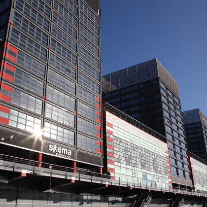
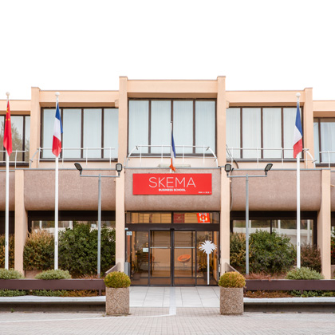
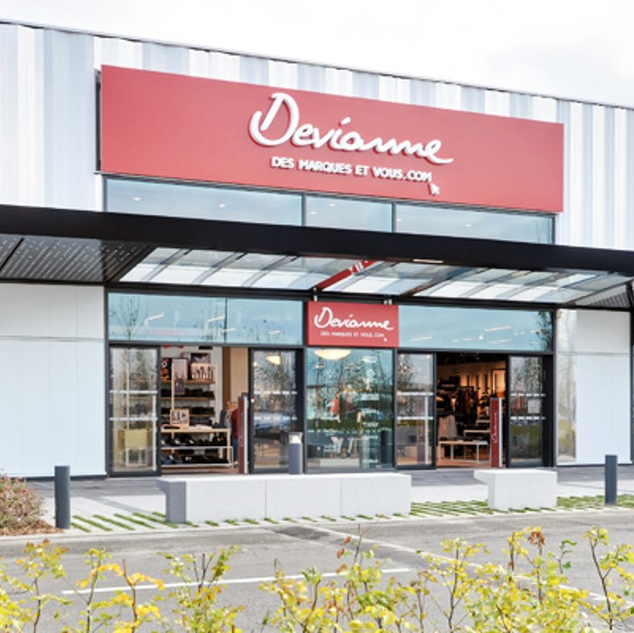
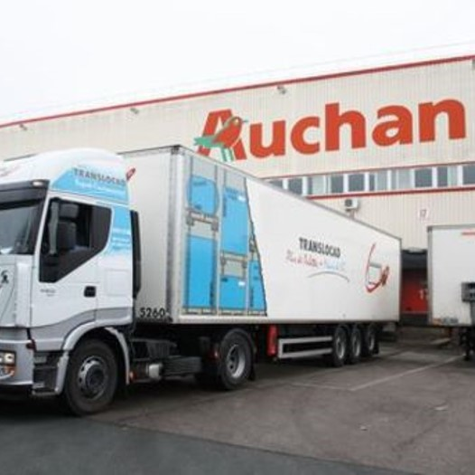
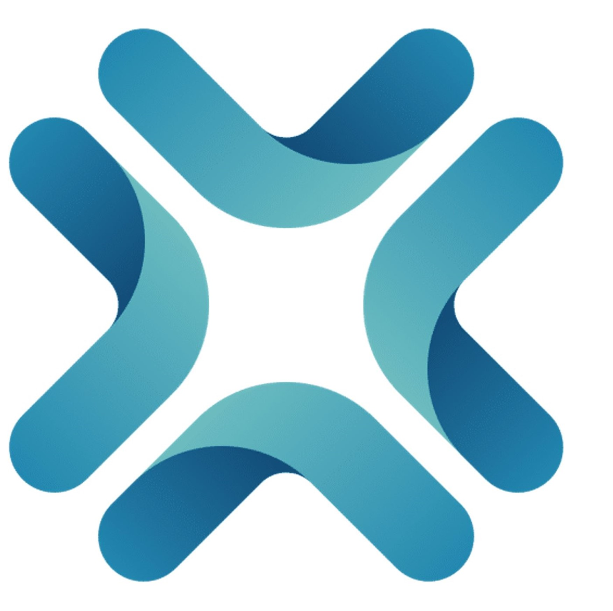
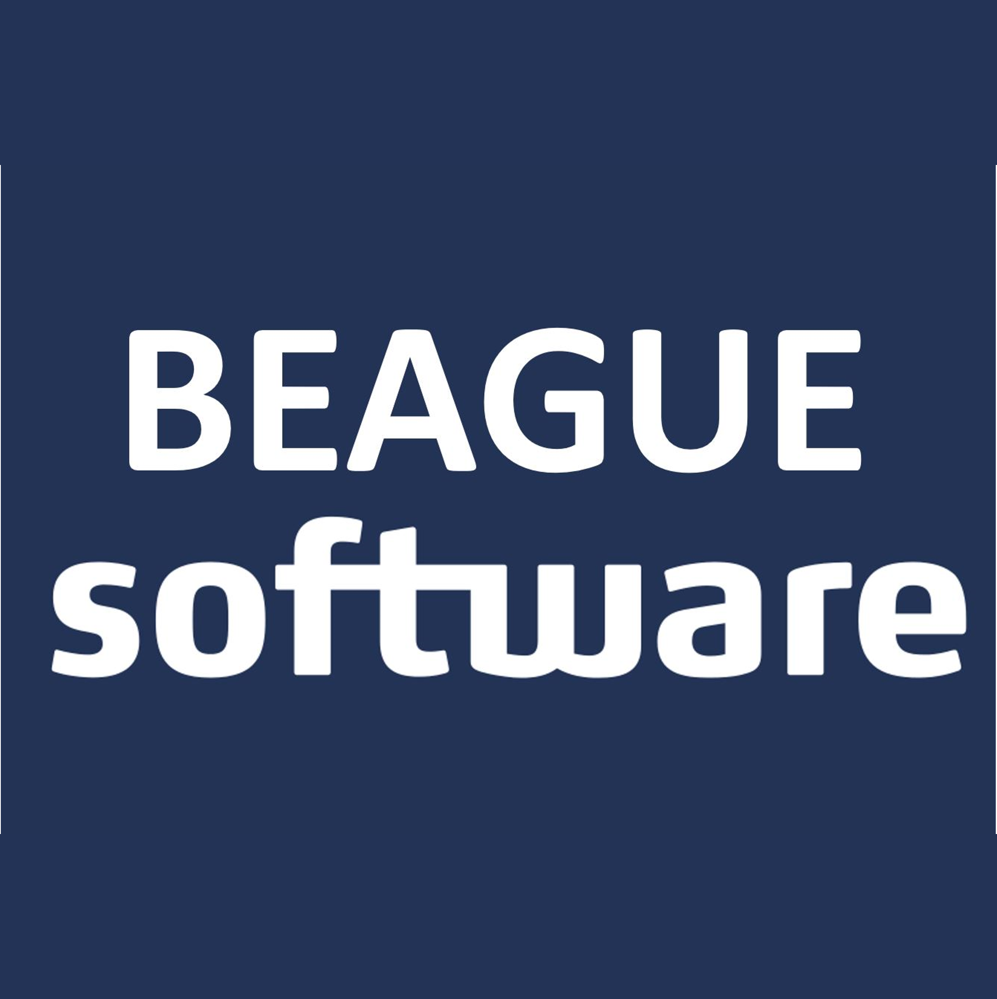

Dans cette partie, je vais vous présenter en détail les raisons pour lesquelles je souhaite intégrer la formation de la SKEMA Business School. Avant d’entrer dans la vie active, j’aimerais me lancer un dernier défi en réalisant ce double diplôme. Je souhaite continuer mes études, car j’ai soif d’apprendre. En ayant l’opportunité de développer des compétences en marketing, en finance, en management et en droit, je pourrai mieux appréhender les objectifs des entreprises. Je pourrai apporter mon point de vue et réaliser des analyses dans plusieurs domaines, et prendre les meilleures décisions dans l’ensemble des projets que j’aurai l’opportunité de mener.
Pourquoi Skema ?

Introduction
Marketing Digital
J’ai toujours eu un intérêt pour le monde du marketing. Je souhaite donc réaliser le MSc en marketing digital. J’ai pu entrer en relation avec des Responsables Marketing sur LinkedIn dans de grosses entreprises (Mercedes, KFC, Boulanger, Leroy Merlin…) et en échangeant avec eux sur leurs missions, je me suis rendu compte que c’était exactement ce que je voulais faire dans le futur. Sur le terrain, j’ai aussi pu comprendre les enjeux de ce domaine, au cours de mon expérience de 8 mois à l’international. Quand je suis arrivé dans l’entreprise, il n’y avait pas de service marketing. Nous avons remarqué qu’il était alors compliqué de se faire connaitre auprès des clients. Nous avions besoin de plus de visibilité. Un service marketing a donc vu le jour. Nous avons lancé des campagnes pour attirer de nouveaux clients, en créant un nouveau site internet, en publiant davantage de contenu sur LinkedIn et au fur et à mesure, notre catalogue client a commencé à s’agrandir. A travers cette expérience, j’ai compris, qu’une fois mon diplôme obtenu, mon souhait serait d’aider les entreprises à comprendre les enjeux clients, et à mettre en place des stratégies marketing leur permettant de développer leur activité (recherche de nouveaux clients, fidélisation…)
Je suis convaincu que le MSc Marketing Digital m’apportera les compétences nécessaires pour mener à bien mon projet professionnel. En effet, les modules étudiés correspondent parfaitement à ce qui me motive et me motivera dans ma vie future. Ce qui me plait dans le marketing, c’est son rôle central au sein d’une entreprise. Il permettra de fidéliser, de capter des nouveaux clients et grâce à ce service que nous arriverons par la suite à développer l’entreprise.

Sophia Antipolis
Ce MSc est situé à Sophia Antipolis. En ayant pu échanger avec des étudiants sur place, ils m’ont affirmé que la vie sur le campus est très agréable. Il y a près de 5000 étudiants. Ma seconde motivation est la dispense des cours intégralement en anglais. Cela me permettra de poursuivre ma maitrise de cette langue, afin de devenir totalement fluent. J’ai déjà pu valider mon TOEIC avec un score de 965. J’ai aussi pour objectif de maitriser le mandarin.
L'international
Ce qui me plait aussi énormément, c’est que SKEMA possède une grande ouverture vers l’international. En 3ème année, j’ai réalisé un stage à Barcelone. Cette expérience, m’a permis de découvrir une nouvelle culture et m’a donné envie de repartir à l’étranger, d’aller plus loin et de pouvoir en apprendre davantage sur le monde qui m’entoure. Pour le second trimestre du M1, nous devons réaliser un échange sur un campus international. Après avoir échangé avec des étudiants de l’ITEEM, mon choix se porte sur le campus situé en Afrique du Sud. Le campus et les cours répondent à mes attentes. De plus, la culture en Afrique du Sud est vraiment différente de la nôtre, ce qui est très enrichissant sur le plan personnel.
Une école de commerce prestigieuse
SKEMA est reconnu pour son prestige et sa renommée. Je sais d’ores et déjà, qu’en intégrant la Skema, les cours que nous aborderons pourront me donner les compétences nécessaires à la réalisation de mon projet et à mon accès au marché du travail. Avec mon profil ingénieur en complément, je pourrai mieux appréhender et comprendre les enjeux des entreprises.
Les projets menés
Parcours et Projets profesionels
Education & Experiences
-

Juin 2019
Devianne
Neuville-en-Ferrain, France.Stage d'initiation à la vente
-

Juillet 2020 - Août 2020
Auchan,
Lesquin, France.Stage à dominance techique ou scientifique
Service du transport national. -

Mai 2021 - Janvier 2022
The Hokus Platform,
Barcelone, Espagne.Stage à l'étranger
Développeur informatique et Product owner. -
Février 2022 -
Avril 2024
The Hokus Platform
Lille, France.Job étudiant
-
Avril 2024 - Septembre 2024
The Hokus Platform,
Luxembourg, Luxembourg.Stage de fin d'études
-
Septembre 2024 - Septembre 2026
The Hokus Platform,
Barcelone, Espagne.Développeur UX.
-
Septembre 2026 - Mai 2030
The Hokus Platform,
Luxembourg, Luxembourg.Chief Marketing & Digital Officer
-

Mai 2030 - Aujourd'hui
BEAGUE Software
Paris, France.Entrepreneur
Recommandations
Métiers interviewés
Mon dossier complet
Ce dossier vous fait part de mes motivations dans le but d’intégrer le parcours double diplôme de la Skema Business School. Je souhaite réaliser par la suite le MSc en Marketing Digital. Intégrer la SKEMA Business School serait, pour moi, un accomplissement, aussi bien sur le plan personnel que professionnel.
J’espère que ce dossier pourra vous transmettre mes motivations, et vous montrer que mon profil et mes aspirations professionnelles futures correspondent parfaitement à l’ADN SKEMA et sont en lien avec le MSc que je souhaite réaliser.


Phone
+33 6 95 12 61 89